Di Lin 林迪Associate ProfessorRm B407, College of Intelligence and Computing Tianjin University Tianjin, China Email: |
I am a tenured associate professor with the College of Intelligence and Computing, Tianjin University. I received my Ph.D. degree from the Computer Science and Engineering Department, the Chinese University of Hong Kong, and B.Eng. degree in software engineering at Sun Yat-Sen University, China.
My research topics include computer vision and machine learning. I am recruiting the self-motivated students to join my research lab and work on the interesting machine vision and learning topics.
|
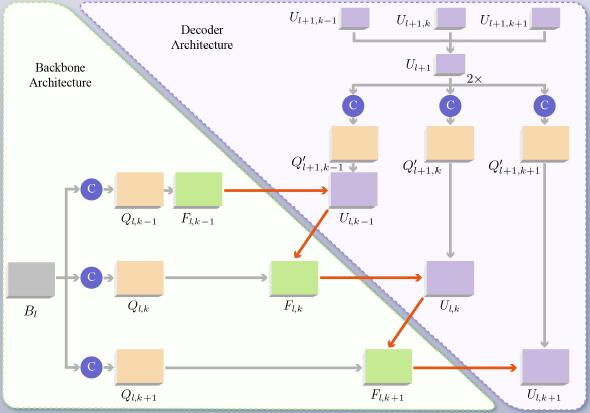 |
Zig-Zag Network for Semantic Segmentation of RGB-D Images,
Di Lin, Hui Huang. IEEE Transactions on Pattern Analysis and Machine Intelligence (TPAMI), 2019. |
|
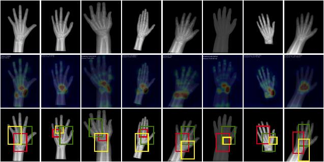 |
PRSNet: Part Relation and Selection Network for Bone Age Assessment,
Yuanfeng Ji, Hao Chen, Dan Lin, Xiaohua Wu, Di Lin (Corresponding Author). International Conference on Medical Image Computing and Computer Assisted Intervention (MICCAI), 2019. |
|
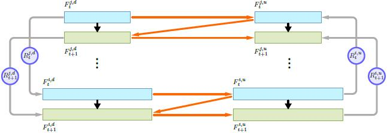 |
ZigZagNet: Fusing Top-Down and Bottom-Up Context for Object Segmentation,
Di Lin, Dingguo Shen, Siting Shen, Yuanfeng Ji, Dani Lischinski, Daniel Cohen-Or, Hui Huang. IEEE Conference on Computer Vision and Pattern Recognition (CVPR), 2019. |
|
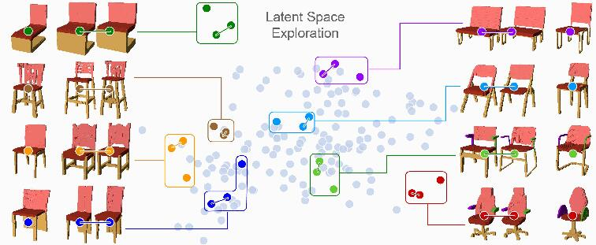 |
SAGNet: Structure-aware Generative Network for 3D-Shape Modeling,
Zhijie Wu, Xiang Wang, Di Lin, Dani Lischinski, Daniel Cohen-Or, Hui Huang. ACM Transactions on Graphics (Proceedings of SIGGRAPH), 2019. |
|
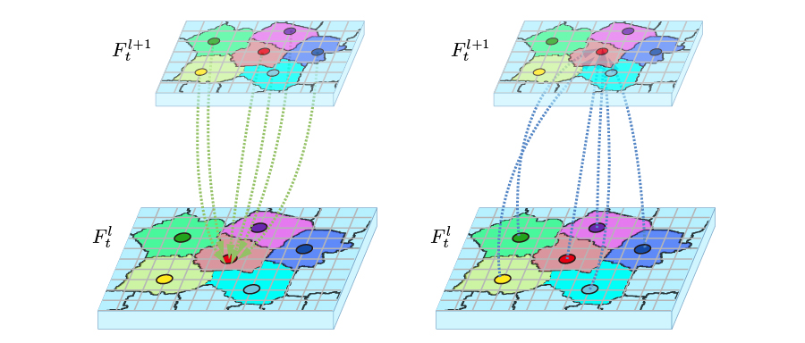 |
Multi-Scale Context Intertwining for Semantic Segmentation,
Di Lin, Yuanfeng Ji, Dani Lischinski, Daniel Cohen-Or, Hui Huang. European Conference on Computer Vision (ECCV), 2018. [project] |
|
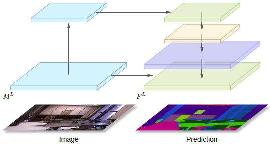 |
SCN: Switchable Context Network for Semantic Segmentation of RGB-D Images,
Di Lin, Ruimao Zhang, Yuanfeng Ji, Ping Li, Hui Huang. IEEE Transactions on Cybernetics (TCYB), 2018. [project] |
|
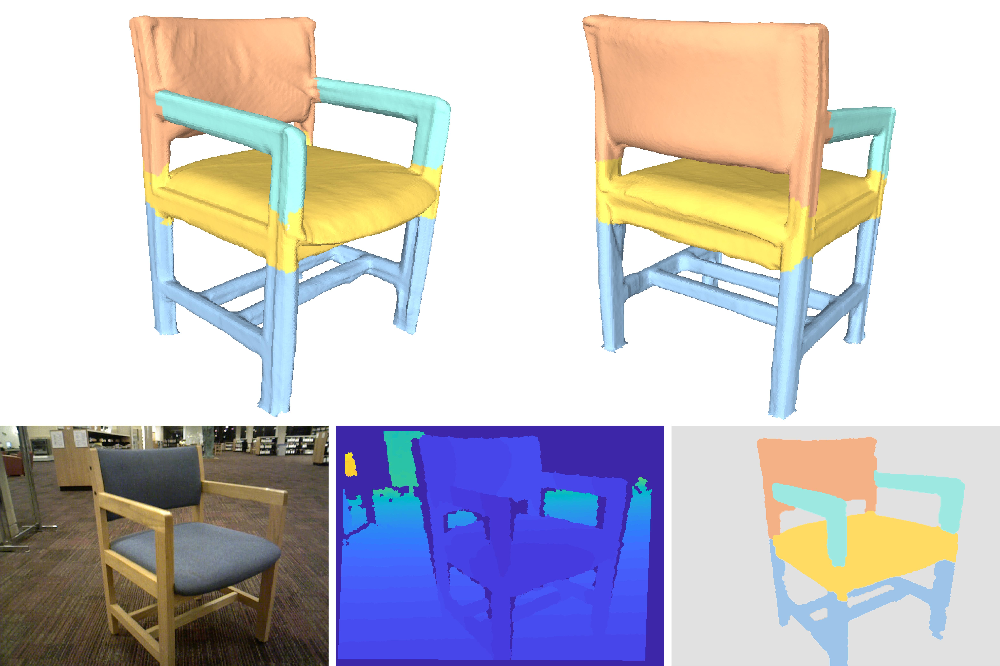 |
Semantic Object Reconstruction via Casual Handheld Scanning,
Ruizhen Hu, Cheng Wen, Oliver van Kaick, Luanmin Chen, Di Lin, Daniel Cohen-Or, Hui Huang. ACM Transactions on Graphics (Proc. SIGGRAPH Asia), 2018. [project] |
|
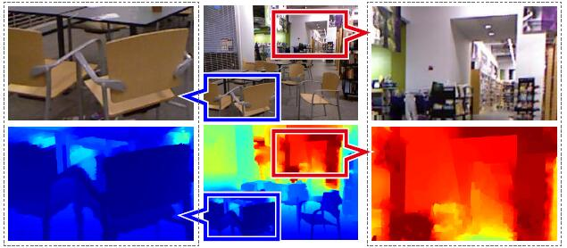 |
Cascaded Feature Network for Semantic Segmentation of RGB-D Images,
Di Lin, Guangyong Chen, Daniel Cohen-Or, Pheng-Ann Heng, Hui Huang. IEEE International Conference on Computer Vision (ICCV), 2017. [project] |
|
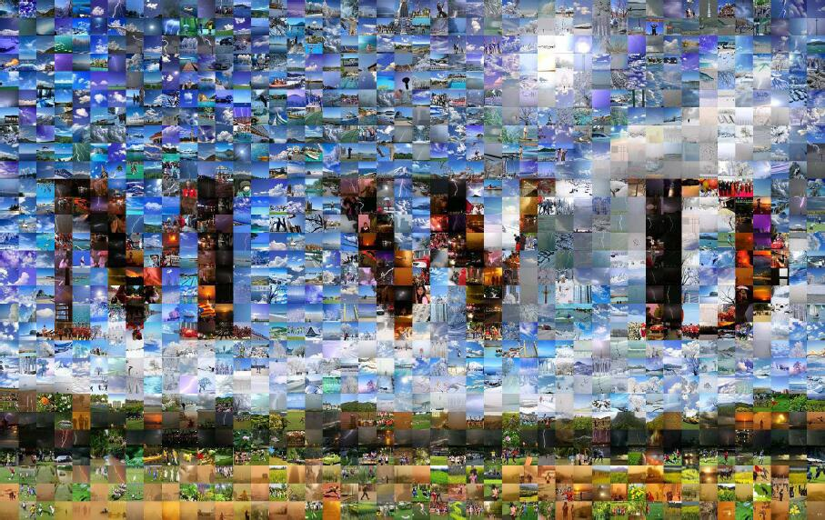 |
RSCM: Region Selection and Concurrency Model for Multi-class Weather Recognition,
Di Lin, Cewu Lu, Hui Huang, Jiaya Jia. IEEE Transactions on Image Processing (TIP), 2017. [project] |
|
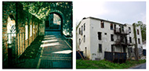 |
Two-Class Weather Classification,
Cewu Lu, Di Lin (Corresponding Author), Jiaya Jia, Chi-Keung Tang. IEEE Transactions on Pattern Analysis and Machine Intelligence (TPAMI), 2017. [project] |
|
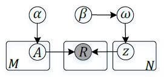 |
Learning to Aggregate Ordinal Labels by Maximizing Separating Width,
Guangyong Chen, Shengyu Zhang, Di Lin, Hui Huang, Pheng-Ann Heng. International Conference on Machine Learning (ICML), 2017. [project] |
|
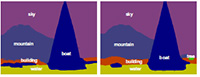 |
ScribbleSup: Scribble-Supervised Convolutional Networks for Semantic Segmentation,
Di Lin, Jifeng Dai, Jiaya Jia, Kaiming He, Jian Sun. IEEE Conference on Computer Vision and Pattern Recognition (CVPR), 2016, (Oral Presentation). [project][code][scribble data] |
|
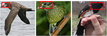 |
Deep LAC: Deep Localization, Alignment and Classification for Fine-grained Recognition,
Di Lin, Xiaoyong Shen, Cewu Lu, Jiaya Jia. IEEE Conference on Computer Vision and Pattern Recognition (CVPR), 2015. |
| Learning Important Spatial Pooling Regions for Scene Classification,
Di Lin, Cewu Lu, Renjie Liao, Jiaya Jia. IEEE Conference on Computer Vision and Pattern Recognition (CVPR), 2014. |
|
| Two-Class Weather Classification,
Cewu Lu, Di Lin, Jiaya Jia, Chi-Keung Tang. IEEE Conference on Computer Vision and Pattern Recognition (CVPR), 2014. [project] |